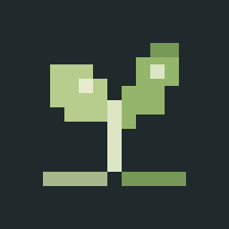

植被调色板
 UI: English · Native Unity 6000.0.83f1
UI: English · Native Unity 6000.0.83f1Tools / TurnRoom / Pixora Studio / Foliage
保存调色板，选择植物，然后在地面绘制。
开始调色板
点击开始调色板并在项目内保存。保存后显示编辑区，取消则留在开始页。安装Samples后会添加五张植物卡。选择卡片并指定地面碰撞体，点击使用所选地面，再启用场景笔刷或填充区域。添加植物会展开来源设置，请指定配置；没有Samples时添加自己的配置。
混合已启用项
权重表示相对频率，不保证最终数量。先安排大植物再安排草；间距、坡度、表面与排除区域可能减少数量。单种绘制请关闭混合并选择一行。
边界与排除区域
仅编辑此画布。原植被区域须明确导入才会修改。矩形和椭圆使用画布局部XZ尺寸；点击地面并按Enter完成多边形。排除范围采用碰撞体的世界XZ包围边界。
保存画布场景
位置与图层保存在场景中，组合与笔刷设置保存在Editor专用调色板资产中。须分别保存。每个完成笔划对应一组撤销，Esc取消当前笔划。原生输入须在编辑器中验证。
按调色板重建画布
使用当前调色板替换此画布全部植被。撤销可恢复原布局，其他画布不变。
放置设置
每次笔刷盖章最多添加512个实例；画布默认上限20,000，最高可设100,000。间距或表面条件可能使数量低于目标。更多几何会增加渲染成本，并非已测量的运行时优化。
属性
已验证Unity Physics、撤销/重做、保存/重开和九语言更新。实际Scene拖动及Windows Ctrl+Z/Ctrl+Y/Ctrl+S也已验证。Alt/Shift细节、弹窗键盘/取消、明暗和九语言全部布局待验证。
拖动绘制，Shift擦除，Alt导航相机，[ / ]调整大小，Esc取消当前笔划并停止。
Foliage